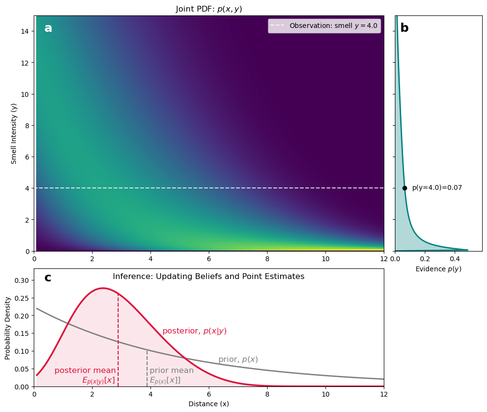

Show the code
import numpy as np
import matplotlib.pyplot as plt
from scipy.stats import gamma
from matplotlib.colors import PowerNorm
# 1. Setup the axes
x = np.linspace(0.1, 12, 300)
y = np.linspace(0, 15, 300)
X, Y = np.meshgrid(x, y)
dx = x[1] - x[0]
dy = y[1] - y[0]
# 2. Define the Generative Model
prior_pdf = np.exp(-0.2 * x)
prior_pdf /= np.sum(prior_pdf) * dx
k = 1 + 5 * np.exp(-0.5 * x)
mean_y = 15 * np.exp(-0.4 * x)
theta = mean_y / k
likelihood_pdf = gamma.pdf(Y, a=k, scale=theta)
# 3. Compute Joint PDF
joint_pdf = likelihood_pdf * prior_pdf[None, :]
# 4. Marginal Likelihood (Evidence)
evidence_y = np.sum(joint_pdf, axis=1) * dx
# 5. Inference for a specific observation (y=4.0)
obs_y_val = 4.0
y_idx = np.argmin(np.abs(y - obs_y_val))
numerator_slice = joint_pdf[y_idx, :]
evidence_scalar = evidence_y[y_idx]
posterior_pdf = numerator_slice / evidence_scalar
posterior_pdf /= np.sum(posterior_pdf) * dx
# 6. Calculate Centers of Mass (Expected Values)
# E[x] = sum(x * p(x)) / sum(p(x)) -- since they are normalized, the denominator is 1
com_prior = np.sum(x * prior_pdf) * dx
com_posterior = np.sum(x * posterior_pdf) * dx
# 7. Plotting
fig = plt.figure(figsize=(12, 10))
gs = fig.add_gridspec(2, 2, width_ratios=[4, 1], height_ratios=[4, 2], hspace=0.1, wspace=0.05)
# Top Left: Joint PDF
ax_main = fig.add_subplot(gs[0, 0])
im = ax_main.pcolormesh(X, Y, joint_pdf, shading='auto', cmap='viridis', norm=PowerNorm(gamma=0.3))
ax_main.axhline(obs_y_val, color='white', linestyle='--', alpha=0.8, label=f'Observation: smell $y={obs_y_val}$')
ax_main.set_ylabel('Smell Intensity (y)')
ax_main.set_title('Joint PDF: $p(x, y)$')
ax_main.legend()
# Top Right: Evidence Sidebar
ax_evid = fig.add_subplot(gs[0, 1], sharey=ax_main)
ax_evid.plot(evidence_y, y, color='teal', lw=2)
ax_evid.fill_betweenx(y, 0, evidence_y, color='teal', alpha=0.3)
ax_evid.set_xlabel('Evidence $p(y)$')
ax_evid.set(ylim=(0, 15),
xlim=(0, evidence_y.max() * 1.2)
)
y4_idx = np.argmin(np.abs(y - 4.0))
ax_evid.plot(evidence_y[y4_idx], y[y4_idx], 'ko', label=f'Evidence at $y={obs_y_val}$')
ax_evid.text(evidence_y[y4_idx] + evidence_y.max()*0.1, y[y4_idx], f'p(y=4.0)={evidence_y[y4_idx]:.2f}', va='center', ha='left', fontsize=10)
plt.setp(ax_evid.get_yticklabels(), visible=False)
# Bottom: Prior vs Posterior with Centers of Mass
ax_inf = fig.add_subplot(gs[1, 0], sharex=ax_main)
ax_inf.plot(x, prior_pdf, color='gray', linestyle='-', lw=2, label='Prior $p(x)$')
ax_inf.plot(x, posterior_pdf, color='crimson', lw=2.5, label='Posterior $p(x|y)$')
ax_inf.fill_between(x, 0, posterior_pdf, color='crimson', alpha=0.1)
ax_inf.text(7, 0.07, r"prior, $p(x)$", color='gray', fontsize=12, ha='center')
ax_inf.text(5.5, 0.15, r"posterior, $p(x|y)$", color='crimson', fontsize=12, ha='center')
ax_inf.text(com_prior, 0.01, " prior mean\n" + r" $E_{p(x)}[x]]$", color='gray', fontsize=12, ha='left')
ax_inf.text(com_posterior, 0.01, "posterior mean \n" + r"$E_{p(x|y)}[x]$ ", color='crimson', fontsize=12, ha='right')
# Add Vertical Lines for Centers of Mass
x_com_prior_idx = np.argmin(np.abs(x - com_prior))
x_com_posterior_idx = np.argmin(np.abs(x - com_posterior))
ax_inf.plot([x[x_com_prior_idx]]*2, [0, prior_pdf[x_com_prior_idx]], '--', color='gray', label=f'Prior Mean: {com_prior:.2f}')
ax_inf.plot([x[x_com_posterior_idx]]*2, [0, posterior_pdf[x_com_posterior_idx]], '--', color='crimson', label=f'Posterior Mean: {com_posterior:.2f}')
# ax_inf.axvline(com_prior, color='gray', linestyle='--', alpha=0.6, label=f'Prior Mean: {com_prior:.2f}')
# ax_inf.axvline(com_posterior, color='crimson', linestyle='--', alpha=0.8, label=f'Posterior Mean: {com_posterior:.2f}')
ax_inf.set_xlabel('Distance (x)')
ax_inf.set_ylabel('Probability Density')
ax_inf.set_title('Inference: Updating Beliefs and Point Estimates', y=0.88)
ax_inf.set(xlim=(0, 12),
ylim=(0, max(prior_pdf.max(), posterior_pdf.max()) * 1.2)
)
ax_main.text(0.03, 0.97, r"a", transform=ax_main.transAxes,
horizontalalignment='left', verticalalignment='top',
fontweight="bold", color="white", fontsize=18)
ax_evid.text(0.06, 0.97, r"b", transform=ax_evid.transAxes,
horizontalalignment='left', verticalalignment='top',
fontweight="bold", color="black", fontsize=18)
ax_inf.text(0.03, 0.97, r"c", transform=ax_inf.transAxes,
horizontalalignment='left', verticalalignment='top',
fontweight="bold", color="black", fontsize=18)
plt.show()